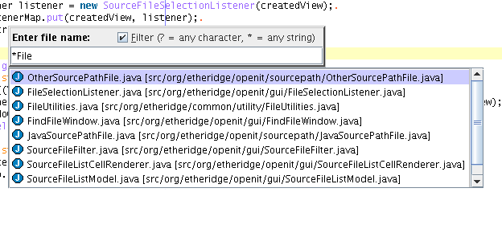

| OpenIt | Version 1.5
(Sep 16, 2006) Denis Koryavov (Maintainer) Matt Etheridge <matt@etheridge.org> (Original Author) |
| Introduction |
The OpenIt plug-in provides a quick and easy way to open files in jEdit. Users simply open a dialog box, start typing the name of the file they wish to open and, as they type, the list of files will be updated to match what they are typing.
Features include:
This version requires (at least):
| OpenIt Usage |
The OpenIt plugin was designed to be quick and easy to use. There is a single jEdit action called, Open File that, when performed, opens a small window with a textfield to enter a file name.
When the user starts to type in the name of the file, all matching files in the user-specified source path will be shown in a scrollable list under the window. An example of this is shown below:

| OpenIt Options |
The OpenIt plugin supports the following option panels to allow users to configure the plugin:
Sourcepath OptionsThis option panel allows the user to set the sourcepath that contains the files they want to be able to open in jEdit with the popup window. This is normally one or more Java source paths - the base directories of all your Java source files (ie. D:\work\src). However, as the OpenIt plugin can open any type of file that jEdit can open, this could just be a project directory (or directories) where files that may be opened in jEdit reside. Adding and removing source/search paths can be done by using the Add and Remove buttons. The Add button will display a JFileChooser to choose any number of source paths that contain files you may wish to open in jEdit.
This option panel contains a File Exclusion Regular Expression Filter. Users can type in a glob/regular expression to match all files they want to filter out of the OpenIt popup file list. For example, if a user did not want to see compiled java class files (*.class), they would simply type the following into the filter textbox:
*.class
If multiple types of files need to be excluded, this can be done in the standard way by including the "|" character between file types. For example:
*.class|*.xml|*.#*
This option panel also contains a Directory Exclusion Regular
Expression Filter. This is similar to the file exclusion filter,
but only excludes directories (and any sub-directories) that match the
filter pattern. The directory exclusion filter can be used in the
following ways:
C:\\source\\test
- excludes all files in the specified directory and any subdirectories)*org\\etheridge\\openit - excludes
all files in the specified directory(s) and any subdirectories.
Using the example pattern the directory: C:\source\plugins\org\etheridge\openit
would be excluded).*etheridge - excludes all files in any
directories that end with the pattern etheridge.)HINT: these files are filtered out during the sourcepath refresh task - which is done periodically in a background thread, so you should not see any performance degradation regardless of how big the filter is.
This option panel also allows the user to specify in seconds, how often the sourcepath should be refreshed from the filesystem. This is useful if you are creating a lot of files in jEdit that you may want to open again in the same jEdit session. This value defaults to 60 seconds.
HINT: the more directories you include in the source path, the longer it will take for the sourcepath to be refreshed! (However, this is done in a background thread so you can still continue in jEdit!)
HINT: If any of the settings in this option panel change, when you press OK the sourcepath will be refreshed automatically in a background thread. Depending on the size of the sourcepath, this can take a few seconds. If you attempt to find a file immediately after pressing OK, you may not see the files in the modified sourcepath. Just wait a few seconds and try again ;)
This option panel allows the user to specify any configuration items that relate to the popup window. These settings include:
| Recent Changes |
| To Do |
Things I would like to do if I have the time:
| Feedback |
The preferred way to send bug reports is to use the Sourceforge Bug Tracker at http://sourceforge.net/bugs/?group_id=588
You can also write to: